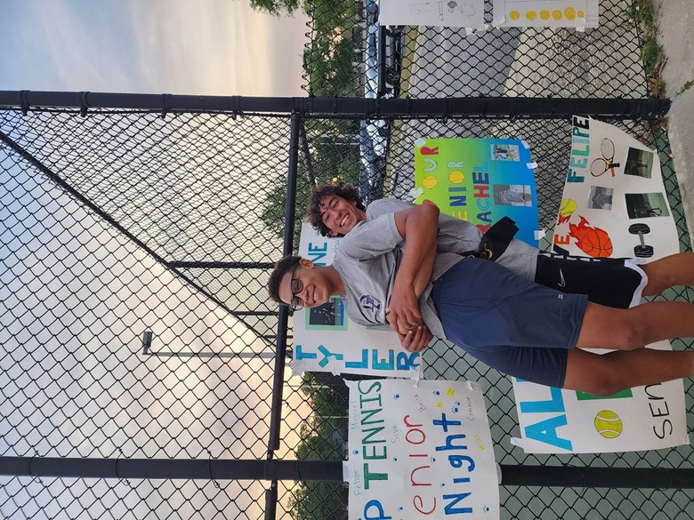

<center><b>Piece of Myself</b></center>
<div>
</div>
<center></center>
<div>
</div>
<p>
Wassup! I am Felipe, currently 18 years old and a high school graduate.
I lived in Brazil for 15 years and I have been living in the US since 2021.
My dream is to change people’s lives through my actions and desires, sometimes having to be simple to be effective.
</p>
<p>
Nowadays, I plan to achieve my pHD before my 30s, going for research in quantum mechanics.
I have always been passionate about challenging what is out of my reach.
I believe that quantum not only fits my desires, but also reflects on how complex and confusing my mind is sometimes.
</p>
<p>
I am excited to keep exploring at Harvard and I am grateful for having the opportunity to do so.
</p>
And here is a [link](../index.html).